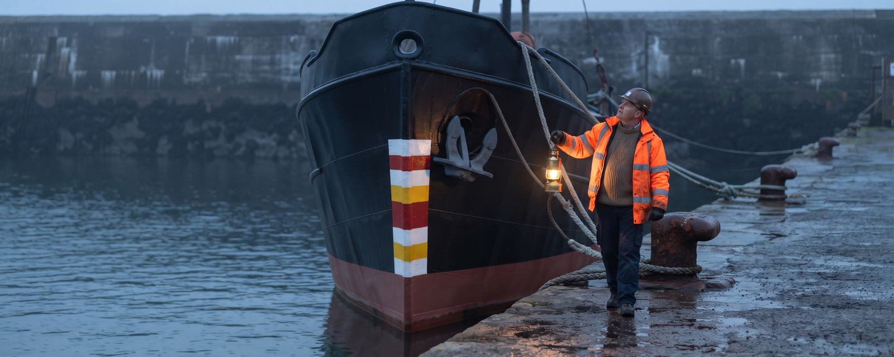

The Harbour Bow. An HTTP header security analyzer that fetches one URL and reports which of six named security headers stand at the head of the response, and which are missing.
The lamp at the stem: the bands are read, one by one, at the head of the hull.
Six checksStrict-Transport-Security, X-Frame-Options, Content-Security-Policy, X-Content-Type-Options, Referrer-Policy, and Permissions-Policy
Presence onlyValues are never judged: a Strict-Transport-Security of max-age=0, which turns the protection off, still counts as found
Final page judgedRedirects are followed, so the headers judged are the final page’s, and a redirector’s own headers are invisible
Printed verdictAll six missing still exits 0; exit 1 is for a URL without an http or https prefix, or a request that fails
Usage
python3 main.py URL [--verbose]
The fetch uses requests with a ten second timeout. An error status is logged, not refused, so the headers of error pages are judged like any other’s. Two credits can be earned by another name: a Content-Security-Policy carrying frame-ancestors earns the X-Frame-Options credit in its place, and the older Feature-Policy name earns the Permissions-Policy credit.
Option
What it does
url
The one URL to fetch and judge. Required, and listed in the README.
--verbose / -v
Sets debug logging.

First light on the wall: the declarations at her head, read before anything else.
Presence is all that is measured
A header that is present but weak, empty, or switched off reads the same as a strong one; the tool reports standing, not strength.
Because redirects are followed, the response that is judged may come from a different page than the address that was handed over.
The status of the response is logged and then set aside: a 404 page with all six headers present reads as fully declared.
Requirements
Python, plus requests 2.31.0 or later, the one entry in the requirements file.